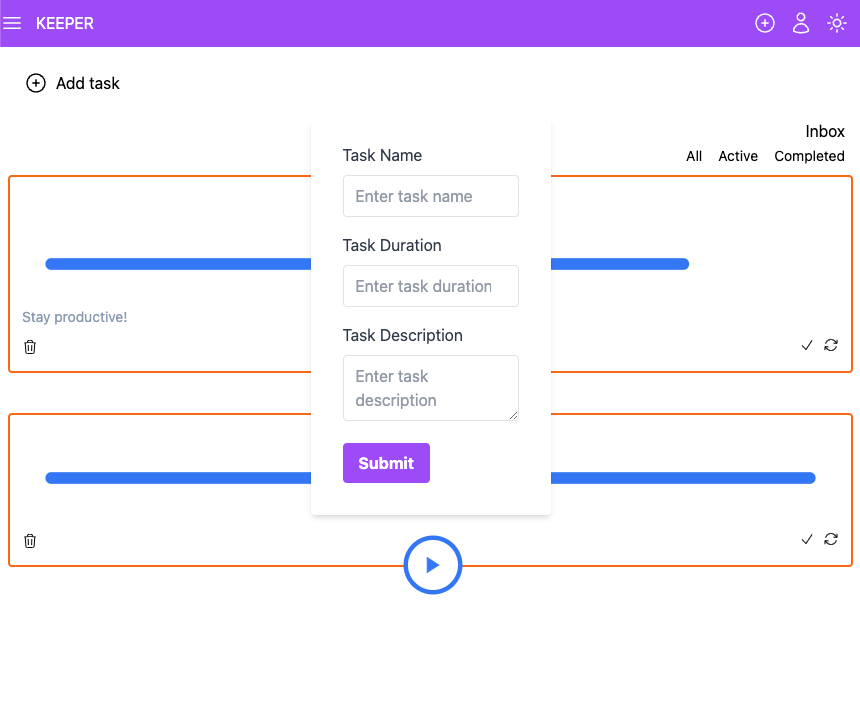
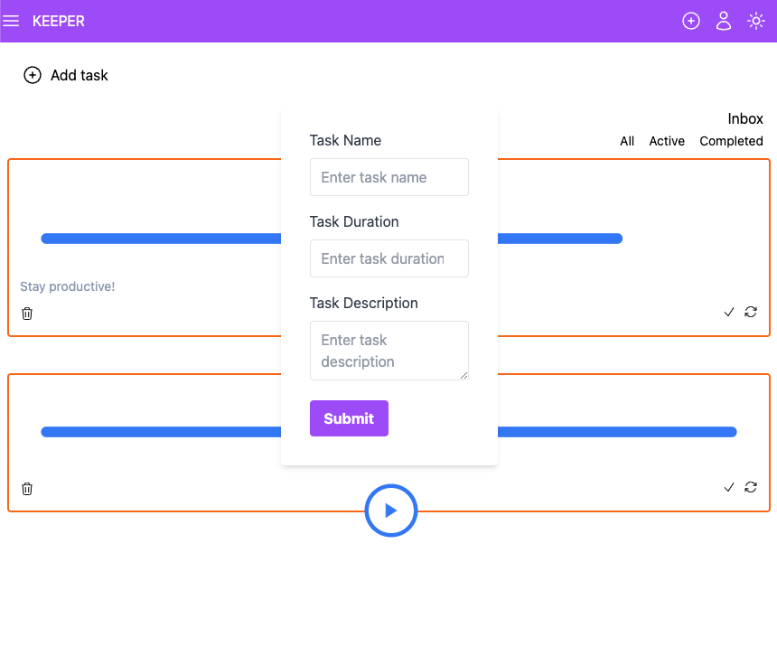

I am a junior web developer fresh out of Code Labs Academy, equipped with an intensive training in web development. Passionate about crafting sleek, functional websites, I've honed my skills in HTML, CSS, JavaScript, and more. With a hunger for challenges and a drive to learn, I'm eager to dive into the professional world of web development.
Take a look at my portfolio to see the projects I've worked on and let's build something amazing together!
My GithubMy Linkedin
SKILLS
- HTML, CSS, JavaScript, Bootstrap
- Front-end javascript frameworks, ReactJS, Next.js, Tailwind, React Router, Hooks, State Management with Redux
- NodeJS, MongoDB, ExpressJS
PROJECTS
E-commerce website audiobooks for kids
Led the end-to-end creation of a dynamic website aimed at selling audiobooks for children in multiple languages, ensuring seamless accessibility for international users to discover and purchase their desired audiobooks in any language. Used technologies: React, JavaScript, Redux, Tailwind, Express.js, MongoDB, Joi
Git repository frontend audiobookGit repository backend audiobook
Keeper App - Tasks management
Used technologies: React, JavaScript, Redux, Tailwind
Git repository Keeper App 
